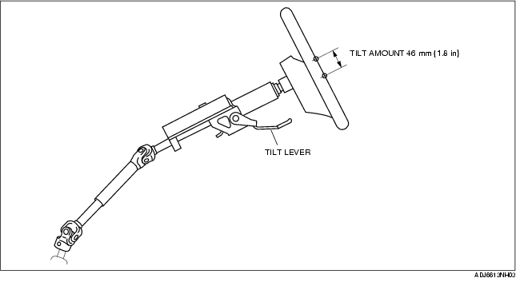

STEERING COLUMN CONSTRUCTION
id061300244700
• Due to the adoption of a tilt mechanism for the steering column on all vehicles, operability has been improved.
• The tilt mechanism has an up-and-down movement range of 46 mm {1.8 in} and can be adjusted, without steps, to anywhere in this range.
